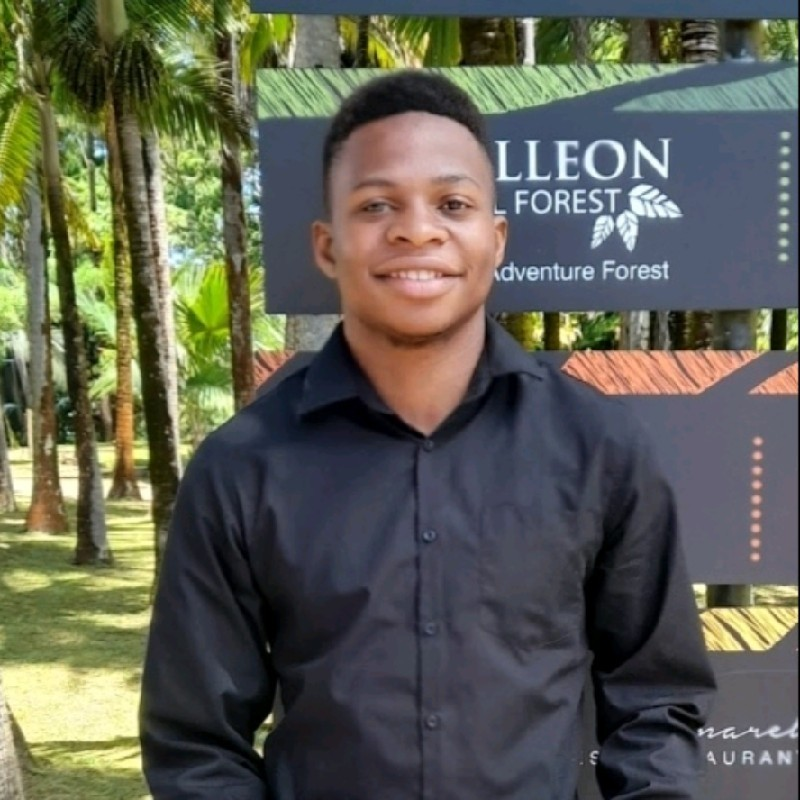
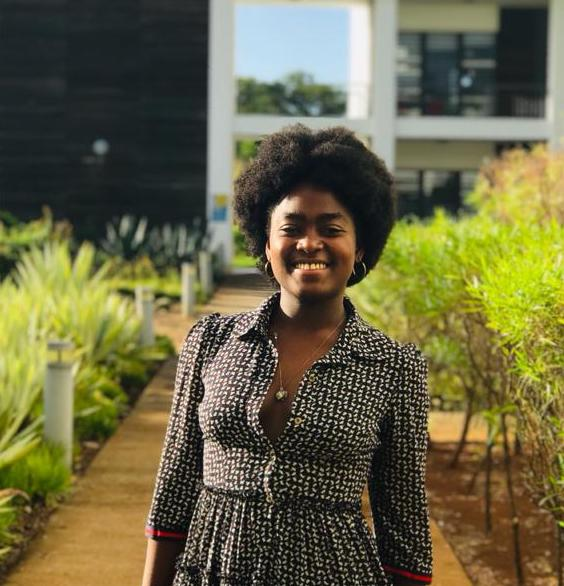
 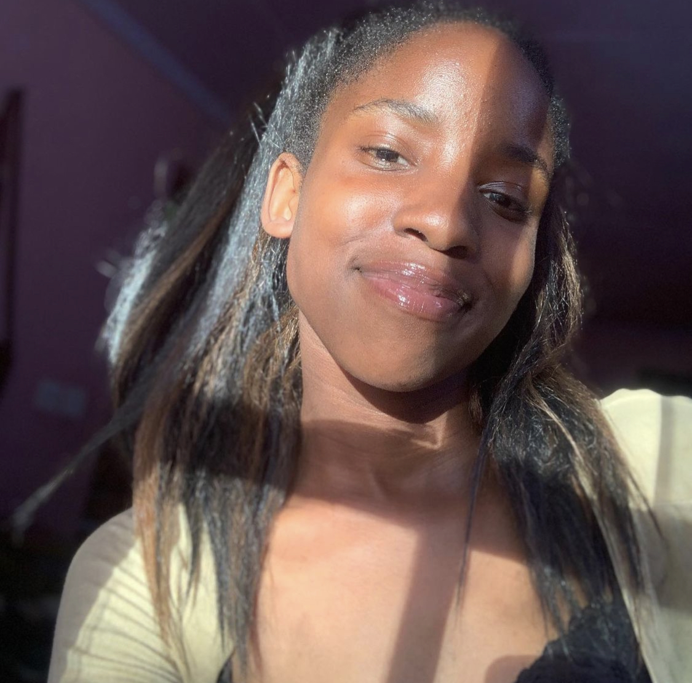
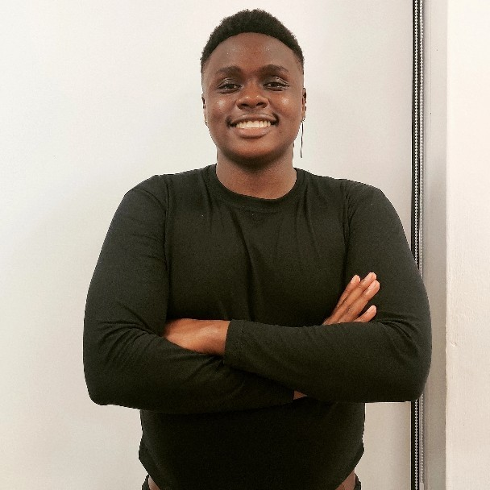
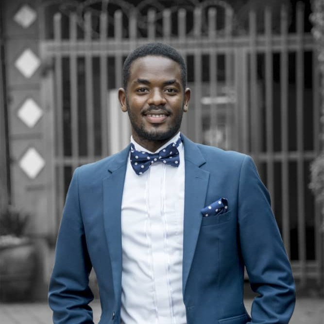
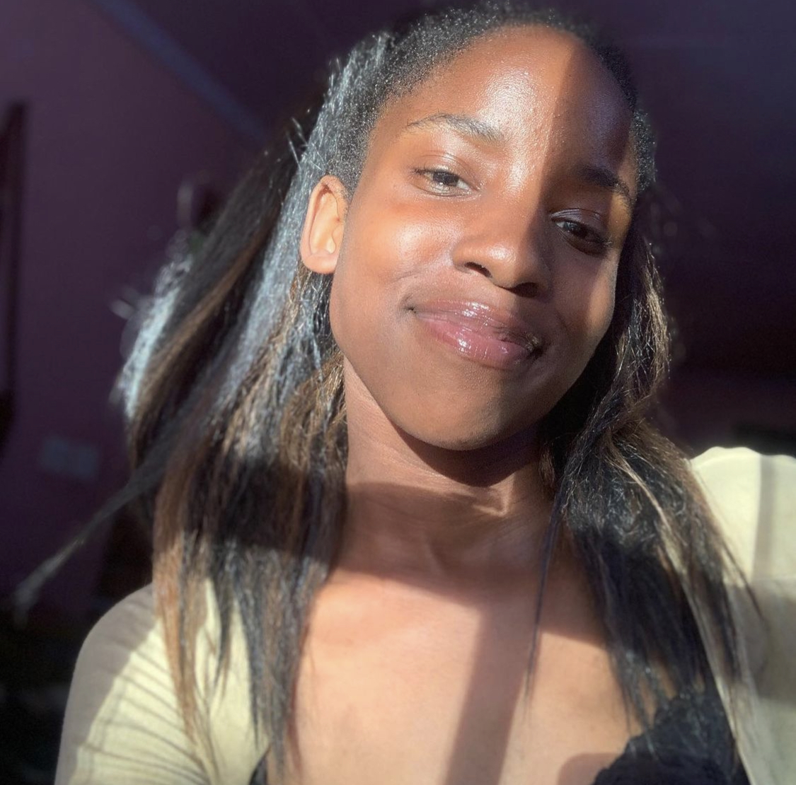
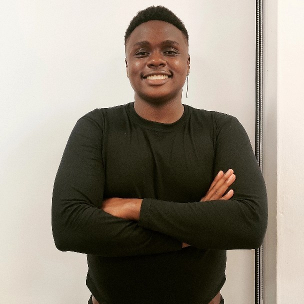
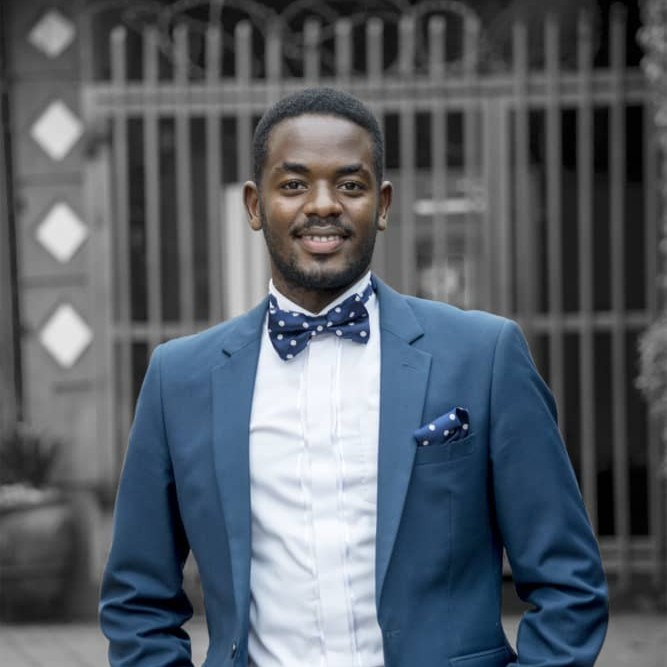
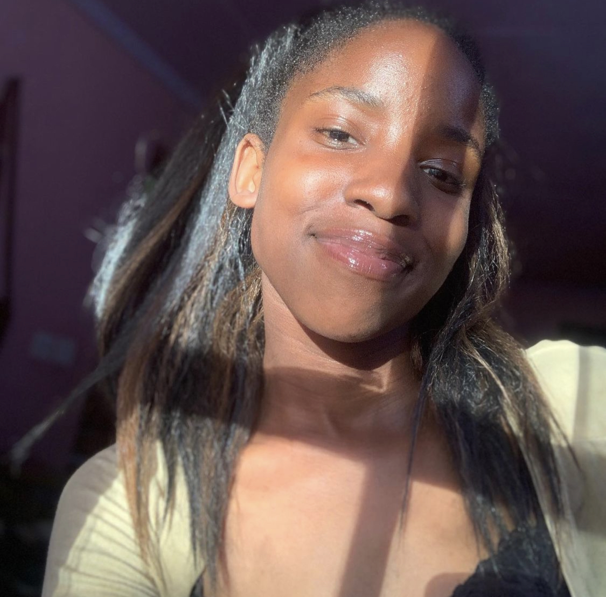
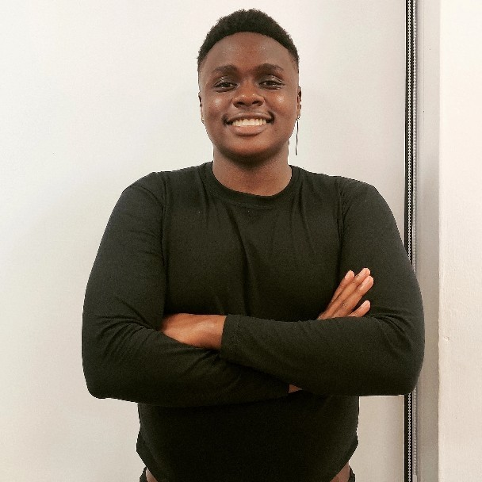
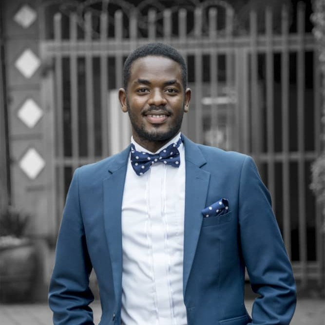
STORY
Welcome Guys to the stories section of our Website,Click on our profiles above to uncover our stories on the way
to join the African Leadership University.
Our journeys before, while and after being students at the most Innovative University In Africa, the African Leadership College.
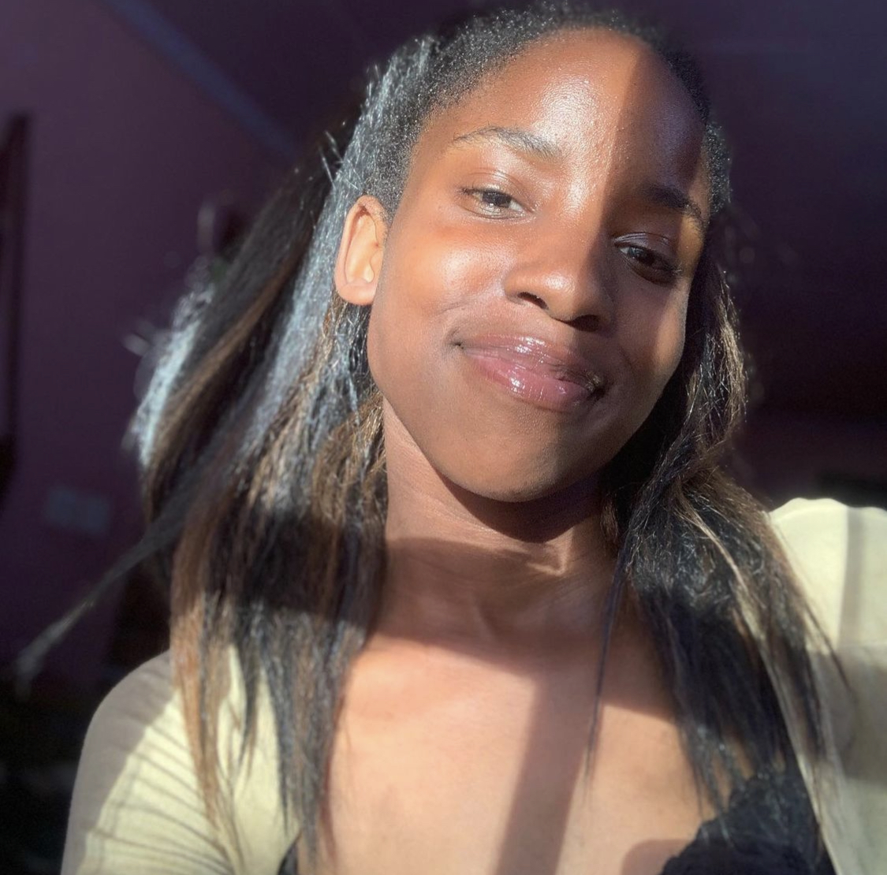
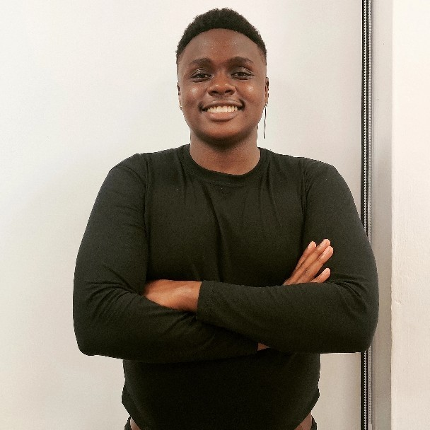
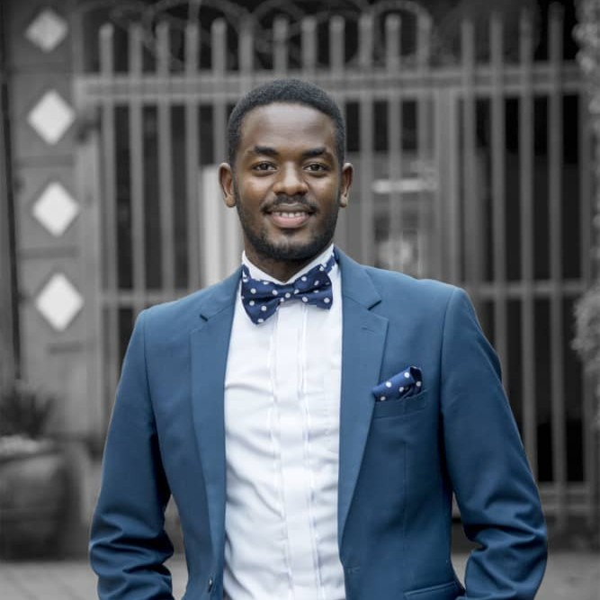
Welcome Guys to the stories section of our Website,Click on our profiles above to uncover our stories on the way
to join the African Leadership University.